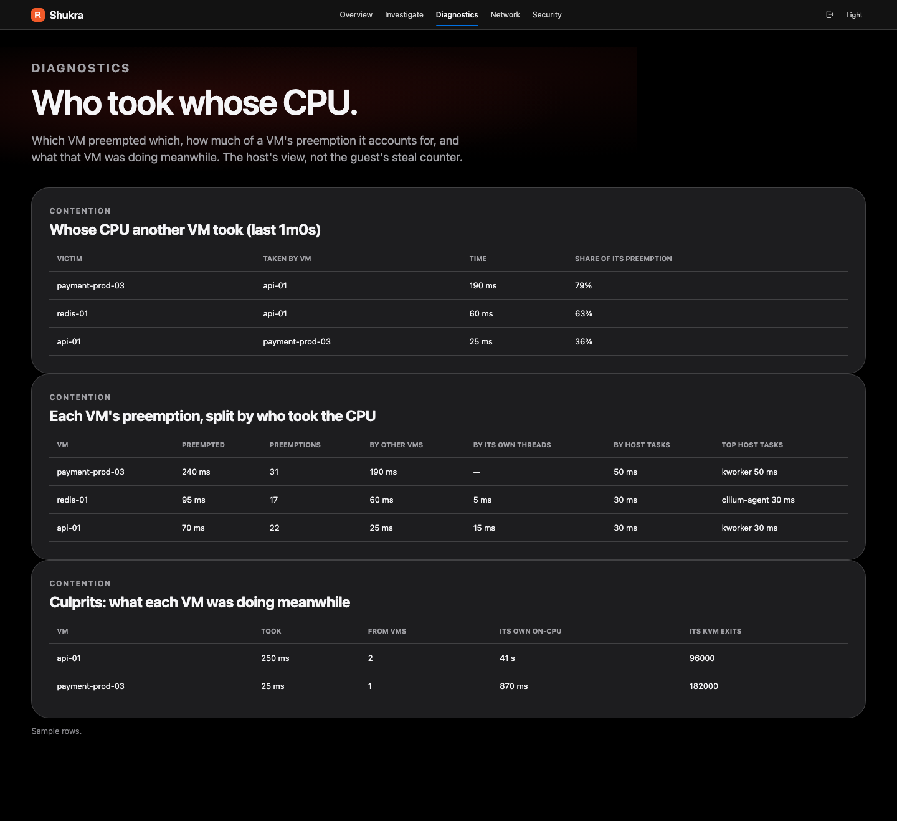

Eight programs, 35 attach points (4 + 4 + 3 + 3 + 3 + 2 + 1 + 15). Each is a separate object with its own hooks. A host that cannot run one loses only that program, and says why.
| Program | Hooks | What it records | Needs |
|---|---|---|---|
| kvm | kvm_exit, kvm_entry, kvm_mmio, kvm_pio | exit counts by reason, exit handling time as a histogram (halts excluded) and time per reason | BTF, Linux 5.8+ |
| sched | wakeup, switch, exec, exit | on-CPU time, run-queue delay per thread, vCPU preemption (runnable but off a host CPU, and who had it), exec and exit of QEMU children | BTF, Linux 5.8+ |
| block | block_rq_insert, block_rq_issue, block_rq_complete | service time and queue time, requests, bytes, errors and the slowest request, per direction | BTF, Linux 5.8+ |
| mem | direct reclaim begin and end, oom/mark_victim | direct-reclaim stalls and OOM kills of the VMM process, not the guest's own memory | BTF, Linux 5.8+ |
| net | tcp_v4_connect, tcp_v6_connect, sampled tcp_retransmit_skb | exact connect counts (IPv4 and IPv6) and 1-in-64 retransmit samples: the QEMU process's sockets | BTF, Linux 5.8+ |
| tap | TCX ingress and egress on each VM tap | the guest's own traffic: per-tap counters; an event per TCP connect, new UDP flow and connection made to the guest; the name in each DNS query and TLS ClientHello; each handshake's outcome; isolation and egress policy | Linux 6.6+, CAP_NET_ADMIN |
| vmm | 13 syscall tracepoints (three opens, ten calls a VMM never makes), plus process fork and exit | for a QEMU process and what it started: each file it opens and each sensitive call it makes (ptrace, mount, setns, module loads). A steady-state VMM does none | BTF, Linux 5.8+ |
| drops | skb:kfree_skb on each VM tap | what the kernel dropped on the tap, by its own reason and the function that freed it, with Shukra's own isolation subtracted | Linux 5.17+ |
The tap program returns TCX_NEXT, never TCX_PASS, so any other program on the same tap (Cilium, FluxVM's egress program, a tc filter) still runs after it. Its links and maps are pinned under /sys/fs/bpf/shukra/tap.
Any program needs BTF at /sys/kernel/btf/vmlinux and CAP_BPF (Linux 5.8+). Drop reasons need 5.17; TCX, egress policy and isolation need 6.6. On arm64, kvm_pio does not exist, so kvm attaches 3 of its 4 hooks.
Shukra names a VM from the QEMU command line (-name or guest=, -uuid, ifname=) and, for libvirt taps passed as file descriptors, the process's fdinfo. A FluxVM guest (QEMU, Cloud Hypervisor, Firecracker or fluxvm-hypervisor) is named from FluxVM's own record and traced on its host veth. A PID that is not a VMM rolls up to _host as unattributed, never a made-up VM name.
| Host | Program | Reported |
|---|---|---|
| hv-2 | tap | detached, with the reason: the kernel is older than 6.6 |
| hv-3 | vmm | detached: turned off with -vmm-tripwires=false |
Illustrative. shukractl programs shows this per host, and a VM with no measurement has no series at all: "not measured" is never rendered as zero. Percentiles come from log2 buckets and can read up to 2x high.
A program that runs on every packet or every open has to be cheap, and has to say what it costs. Each figure below was measured by the project and is quoted from its own documentation. Scale it by your own kernel, hardware and traffic.
| What | Measured cost | Where, and the caveat |
|---|---|---|
| drops | about 255 ns per drop; 69 a second is 0.002% of one CPU | 12-CPU Xeon hypervisor. It runs once per packet dropped anywhere on the host, so scale by your drop rate: a million a second is about a quarter of a CPU |
| sched | about 490 ns per switch with no VM watched, about 615 ns with ten; about 435 ns before preemption tracking | same host, ten VMs, about 60,000 switches a second: about 11 ms of CPU per second more, under 0.1% of the host. Includes the kernel's own run-time accounting, switched on for the measurement |
| vmm | about 183 ns per open; 0.161% of one core at about 8,100 tracepoint hits a second; about 2% of a core at 100,000 opens a second | Intel Xeon E-2336, Linux 6.8, a k3s and Cilium node. The tracepoints fire for every process, so each first finds out whether the caller is a VMM. -vmm-tripwires=false on a host that busy |
| tap: TLS server names | about 10 to 15 ns added to a data segment; nothing to an ACK or a UDP datagram; about 60 to 85 ns for the one segment per connection that is a hello | same Xeon, on a private copy of the program. A floor: the same packet run over and over, caches warm. About 1 to 1.5% of a core at a million data segments a second |
| tap: egress policy | with no policy on a tap, one extra read and compare per packet: about 7 to 10 ns (a data segment 76 to 78 ns before, 86 to 87 ns after) | about 1% of a core at a million packets a second. A tap under a policy adds a trie lookup per new connection or datagram |
| the daemon | 5 to 9% of a core and about 88 MB, down from about 55% and 155 MB, with the same output | found by profiling shukrad on a 12-core production node: 10 VMs, k3s and Cilium. Nearly all the old cost was garbage collection |
Measured on lab and production hypervisors of the project's own. Costs of kvm, block and net are not published.
Once a VM's ring was full, every event copied all 4,096 events into a new slice: over a megabyte of pointers for the garbage collector, per event. Adding to a full ring now allocates nothing, and a test asserts it.
The scheduler maps hold every thread that has run on the host, about 64,000 on that node. Each 2-second refresh built a record for each only to add it into the host row. They are now added into one slot as they are read.
One system call for up to 2,048 entries instead of two per entry: over 200,000 system calls per refresh on that node. A kernel or map that cannot batch falls back to the old walk.
Measure your own host. scripts/bench-tap.sh reports what the tap program costs per packet on your kernel. It runs BPF_PROG_TEST_RUN on a private copy with its own maps, attached to nothing, so it is safe on a production host.
It is 03:12. A user says payment-prod-03 is slow. Nothing inside the guest looks wrong, and the host graphs are flat. The counters that would explain it are already in Shukra's maps, so the operator asks.
/proc every two seconds, so counters land on the right process and thread: a vCPU, an iothread or a vhost worker.shukractl explain payment-prod-03 (or opens the Explain page). It weighs the last minute; --window takes 10 s to 5 min.| Cause | What it points at |
|---|---|
| host_cpu_contention | the VM's threads wait for a host CPU after being woken: host load, pinning, neighbours |
| cpu_preempted | the host took CPU away from the vCPUs while they wanted to run |
| noisy_neighbour | one other VM accounts for at least half of that preempted time |
| storage_latency | block requests from QEMU take long: the backing device, queue depth, other writers |
| kvm_exit_handling | the host is slow to service KVM exits, often device emulation |
| tcp_retransmits | the QEMU process retransmits: host traffic such as migration or a remote disk, not the guest's |
| guest_traffic_dropped | the kernel drops this VM's packets and Shukra's isolation is not the cause: another program on the tap |
| guest_not_reading_nic | the tap's queue is full: the guest is stalled, has no working NIC driver or is overloaded |
| guest_connects_failing | most outbound connections fail: refused means nothing listens, never answered means something drops the SYN |
no_host_cause: look inside the guest, which Shukra does not measure.The finding is cpu_preempted: the host took CPU away from the VM's vCPUs. On a busy hypervisor the next question is who. Shukra answers it from the scheduler's own switch events, without touching either guest.
Illustrative numbers. The percentages are shares of the VM's preempted time.
sched_switch fires when a thread leaves a CPU. If a QEMU thread leaves while still runnable, it was taken off while it wanted to run: the program remembers who took the CPU and, when the thread next runs, adds the wait to the pair (this thread, that thread). A thread that goes to sleep is dequeued first, so sleeping is never counted.
vm:<name>, or the VM's own other threads.kworker/3:1 and kworker/u16:2 are both kworker.$ shukractl trace contention --window 5m vm=osboxes-debian preempted=1882612ns over 12 preemptions (other VMs 0ns, its own threads 0ns, host tasks 1882612ns) taken by host tasks: cilium-agent 1031780ns, kubectl 321523ns, hubble-relay 188161ns, containerd-shim 103092ns as printed in the after-the-fact tutorial: here the culprit was the host's own tasks, not another VM

It is half past five. The last minute, which Explain weighs by default, is no help. With a data directory, the daemon has been storing a coarse snapshot every five minutes, so the operator can ask about a past time and say how far to trust the answer.
shukractl explain payment-prod-03 --at -2h30m, or an RFC 3339 time. The window is 5 minutes to 6 hours, 15 minutes by default.shukractl trace contention if the finding is cpu_preempted or noisy_neighbour.shukractl incident payment-prod-03 --at -2h30m --out bundle.json, written with mode 0600.$ shukractl explain osboxes-mint --at -2h30m EXPLAIN why was this VM slow? (window: 5m0s) (at: 2026-09-20T04:50:27Z) resolution: 5m0s snapshots: the verdict stands on 2026-09-20T04:40:53Z and 2026-09-20T04:45:53Z findings (best supported first) [low] no_host_cause: Nothing host-side crossed a threshold. If the guest is slow, the cause may be inside it, which this build does not measure. as printed in the after-the-fact tutorial. A calm host is a real answer: it says the host was fine.
The verdict; the window's detections; what the flight recorder saw of that VM (at most 500 events); isolate and release requests; whether isolation is available and the management networks an isolated VM keeps; and which programs were attached. Nothing else from the daemon's configuration: no key, no listen address.
The second it happened. Anything before the daemon first stored a snapshot, or while it was not running. Anything inside the guest. And with nothing stored, it says no_history and why, instead of guessing. Retention is set by size: about a day or two at ten VMs.